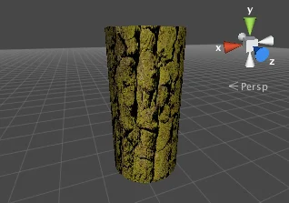
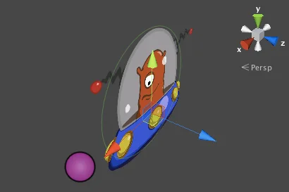
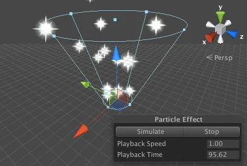
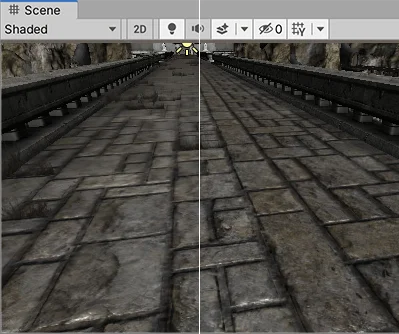

Normally, the mesh geometry of an object only gives a rough approximation of the shape while most of the fine detail is supplied by TexturesAn image used when rendering a GameObject, Sprite, or UI element. Textures are often applied to the surface of a mesh to give it visual detail. More info
See in Glossary. A texture is just a standard bitmap image that is applied over the mesh surface. You can think of a texture image as though it were printed on a rubber sheet that is stretched and pinned onto the mesh at appropriate positions. The positioning of the texture is done with the 3D modelling software that is used to create the mesh.

Unity can import textures from most common image file formats.
This page uses the following terminology:
Textures are applied to objects using MaterialsAn asset that defines how a surface should be rendered. More info
See in Glossary. Materials use specialised graphics programs called ShadersA program that runs on the GPU. More info
See in Glossary to render a texture on the mesh surface. Shaders can implement lighting and colouring effects to simulate shiny or bumpy surfaces among many other things. They can also make use of two or more textures at a time, combining them for even greater flexibility.
You should make your textures in dimensions that are to the power of two (e.g. 32x32, 64x64, 128x128, 256x256, etc.) Simply placing them in your project’s Assets folder is sufficient, and they will appear in the Project View.
Once your texture has been imported, you should assign it to a Material. The material can then be applied to a mesh, Particle SystemA component that simulates fluid entities such as liquids, clouds and flames by generating and animating large numbers of small 2D images in the scene. More info
See in Glossary, or GUI Texture. Using the Import Settings, it can also be converted to a CubemapA collection of six square textures that can represent the reflections in an environment or the skybox drawn behind your geometry. The six squares form the faces of an imaginary cube that surrounds an object; each face represents the view along the directions of the world axes (up, down, left, right, forward and back). More info
See in Glossary or Normalmap for different types of applications in the game. For more information about importing textures, please read the Texture Component page.
In 2D games, the SpritesA 2D graphic objects. If you are used to working in 3D, Sprites are essentially just standard textures but there are special techniques for combining and managing sprite textures for efficiency and convenience during development. More info
See in Glossary are implemented using textures applied to flat meshes that approximate the objects’ shapes.

An object in a 2D game may require a set of related graphic images to represent animation frames or different states of a character. Special techniques are available to allow these sets of images to be designed and rendered efficiently. For more information, refer to Create sprites from a texture.
A game’s graphic user interface (GUI) consists of graphics that are not used directly in the game scene but are there to allow the player to make choices and see information. For example, the score display and the options menu are typical examples of game GUI. These graphics are clearly very different from the kind used to detail a mesh surface but they are handled using standard Unity textures nevertheless. See the manual chapter on GUI Scripting Guide for further details about Unity’s GUI system.
Meshes are ideal for representing solid objects but less suited for things like flames, smoke and sparkles left by a magic spell. This type of effect is handled much better by Particle Systems. A particle is a small 2D graphic representing a small portion of something that is basically fluid or gaseous, such as a smoke cloud. When many of these particles are created at once and set in motion, optionally with random variations, they can create a very convincing effect. For example, you might display an explosion by sending particles with a fire texture out at great speed from a central point. A waterfall could be simulated by accelerating water particles downward from a line high in the scene.

Unity’s particle systems have a wealth of options for creating all kinds of fluid effects. See the manual chapter on the subject for further information.
Anisotropic filtering increases Texture quality when viewed from a grazing angle. This rendering is resource-intensive on the graphics card. Increasing the level of anisotropy is usually a good idea for ground and floor Textures. Use Quality settings to force anisotropic filtering for all Textures or disable it completely. Although, if a texture has its Aniso level set to 0 in Texture Import Settings, forced anisotropic filtering does not appear on this texture.
